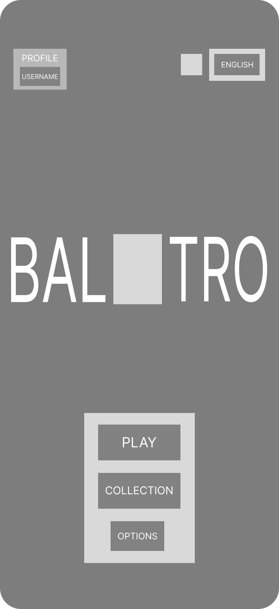
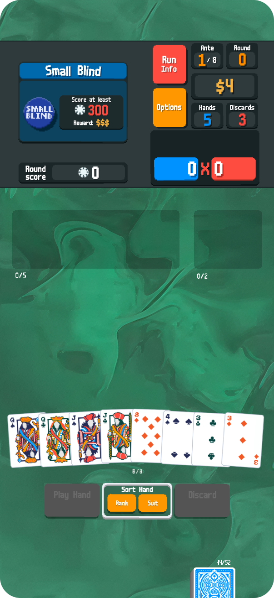

The Problem
- Horizontal Constraint
- Unreached Potential
The current Balatro mobile experience is a faithful landscape port that excels for dedicated, two-handed sessions. However, the horizontal-only constraint creates a "contextual barrier" for players in mobile-first environments, such as commuting or multitasking, where portrait orientation is the natural ergonomics of the device.
This redesign wasn't done to fix the horizontal playstyle, but rather to enhance the game’s reach by offering a vertical alternative. The goal was to translate the high-density information into a layout optimized for quick, one-handed interaction without compromising the game's hypnotic visual depth.
The Process
01. Rapid Wireframing
Using wireframing as a brainstorming method, alongside research of the current UI.
02. Visual Asset Translation
Translating and recreating UI art elements to match the iconic Balatro style.
03. UI Mockups
Make the transition between wireframes and a polished UI.


Rapid Wireframing
Given the short sprint timeline, I moved quickly into lo-fi wireframing to solve the spatial puzzle of a vertical Balatro. I merged a hypothetical “brainstorming” phase and the initial wireframing process to get my ideas into Figma faster. I prioritized the "Golden Ratio" of mobile reach, placing the player's hand (the most interactive element) in the bottom third of the screen. I decided to keep the layout as similar to the horizontal view as possible. I had to shrink some elements slightly to avoid cramming.
Visual Asset Translation and Mockups
A key part of the process was maintaining the game's iconic "CRT-pop" aesthetic. To get the pixelized elements, I used Aseprite to hand draw certain features. With this tool, combined with copying over some cropped screenshots, I managed to build almost identical looking Balatro elements in my desired vertical layout. I moved all of the informational features to the top of the screen, as the player interacts with that block less (options and run-info occasionally), and kept all of the core gameplay buttons at the bottom, in comfortable reach of the thumb.
The Solution



Ergonomic Command Center
The core of the redesign is a bottom-weighted interaction model. By anchoring the "Play Hand,” "Discard," and the player’s hand of cards within the natural thumb zone, the UI transforms from a two-handed commitment into a complimentary one-handed experience. This allows the player to cycle through rounds with minimal physical travel across the screen, perfect for mobile-first environments.
Visual Information Hierarchy
To avoid a "crammed" aesthetic, the redesign utilizes a top-down stack that prioritizes visibility without sacrificing the game's complexity:
- The Info Header: Non-interactive and non-core elements, including the "Run Info," "Options," are consolidated at the top of the frame. This keeps the scoring math visible at all times while clearing the way for gameplay.
- Asset Fidelity: By utilizing custom Aseprite drawings and precise scaling, the "CRT-pop" and pixel-art integrity remain sharp. The transition to vertical feels like a native mode rather than a compressed port, preserving the "hypnotic visual depth" that defines the Balatro brand.
- Familiar Anchors: To ensure a frictionless transition for existing players, the relative positioning of Jokers and Consumables remains consistent with the horizontal layout, simply scaled to fit the vertical aspect ratio.